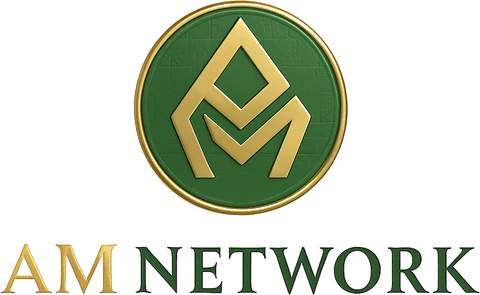

Version 2.0 replaces Version 1.1 (October 2026) and describes a different model. See “What changed since v1.1” at the end.
amnetwork.io · contact@amnetwork.io
Zakat is the third pillar of Islam: one-fortieth of qualifying wealth, owed every lunar year by each Muslim whose wealth exceeds the nisab. The World Bank and IRTI/IsDB estimate the annual Zakat potential — what is owed, not what is collected — at $50–600 billion. Less than $25 billion of it is distributed through formal institutions. The rest is given in cash, through intermediaries, or not at all, and the person who gave it can rarely check whether it reached a family in real need.
AM Network is a verification and transparency service for Zakat and Sadaqah: we check each family in person, publish an open, tamper-evident report of every payout, and never hold the money — the donor gives directly to the family.
Pilot in preparation: Dushanbe, Tajikistan, 10–20 families, around Ramadan 2027 (February–March), using only the founder’s own and his relatives’ Zakat. There is no public fundraising. The software for families, verifiers, donors and the admin is built; before the pilot we will consult a lawyer in Tajikistan, seek review by a Hanafi scholar, train volunteers and run a trial with 2–3 families. We are not raising investment now.
AM Academy — Sharia-compliant financial literacy, explained for four audiences, with a downloadable certificate — and free Islamic tools in 10 languages: Quran, hadith, dua, prayer times, Qibla, Islamic calendar, 99 Names, tasbeeh and a Zakat calculator.
AM Network does not try to replace personal trust. It adds two things to it: a careful, recorded check of each family by a person who visited, and a public record of each payout that cannot be quietly changed.
Only the founder’s own Zakat and that of his relatives. We do not ask the public for money. That keeps the pilot small and honest: if something goes wrong, it is our own Zakat and our own responsibility, and we can learn before anyone else depends on the process.
Trained AM Network volunteers. Only the admin can give someone the verifier role, and only to people the admin knows personally. Later, staff of registered partner charities may also verify. Mosques and imams are not a fixed part of the process: the system must work without depending on any religious institution.
The volunteer visits the family where it lives and records what was confirmed in person:
The volunteer then recommends help or do not help, and may add notes that only the admin sees.
The checklist is shown to the volunteer with its points next to each item, so nobody has to guess how the number is made. The total is capped at 100. It is a transparent hint for the person who decides, not a decision.
| Item confirmed during the visit | Points |
|---|---|
| No income for 3 months or more | +20 |
| Income per person below the subsistence minimum (not added if the item above is ticked) | +14 |
| Disability or serious illness without treatment | +12 |
| No wealth above nisab | +10 |
| Widow, single mother or orphans without a breadwinner | +10 |
| No own home, or rent arrears | +10 |
| Debt for necessities the family cannot repay | +8 |
| Not enough food | +8 |
| An elderly person is forced to work | +6 |
| Refugees, displaced or disaster-affected | +6 |
| Dependents | 2 each, up to 10 |
| Total | capped at 100 |
Applications are also tagged with situation categories, mapped to the eight categories of Zakat recipients (asnaf) in the Quran (9:60): widows and single mothers; orphans; elderly people forced to work; disabled people; families below the poverty line; students from low-income families; people in riba-based debt; refugees and displaced persons; the chronically ill without care; large families with one breadwinner; food-insecure households; new Muslims in hardship; survivors of trafficking and forced labour; victims of conflict and disasters; and people invisible to traditional charity. Only the category, never the story, appears in the public report.
AI does not decide anything in this process. At most it may later help explain the checklist to a family or a donor.
These rules are written into the database itself, not only into the web page, so a modified page or a direct request cannot get around them:
Every payout is published at amnetwork.io/transparency/. The page is public and needs no account.
| Shown for each payout | Never shown |
|---|---|
| Entry number and date given Reference number (e.g. AMN-2027-0001) City or district Situation category Amount and currency Type: Zakat or Sadaqah How it was given: cash, Alif, Korti Milli, bank Number of in-person checks Whether a receipt fingerprint exists The entry’s fingerprints (previous and own) | Names Phone numbers Addresses Photos The family’s story Volunteers’ notes Who the donor is |
The page also shows totals: families helped, payouts, applications, families checked, and the sum given in somoni. The public can read the report only through two read-only database functions that return these fields and nothing else.
When a payout is recorded, the database builds one line of text from the entry’s facts and the fingerprint of the entry before it:
An illustrative entry (the hashes are shortened): 0000…0000|AMN-2027-0001|1500.00|TJS|zakat|2027-02-20|9f2c…e41aThe opening entry links to a fingerprint of 64 zeros. Each later entry includes the previous entry’s entry_hash as its prev_hash. Change any past amount, date or reference, and that entry’s fingerprint no longer matches — nor does every entry after it. The fingerprints are computed by the database at the moment of recording, and the app has no way to edit or delete a payout: entries can only be added.
A receipt or a transfer screenshot is never uploaded. The admin’s browser computes its SHA-256 fingerprint on the device, and only those 64 characters are stored and included in the payload. If a question arises later, showing the original file to an auditor proves it is the same receipt: any change to the file produces a different fingerprint.
The “Check the chain” button on the report page re-checks every entry in the visitor’s own browser: that the payload matches the fields shown, that sha256(payload) equals the entry’s fingerprint, and that each entry points to the one before it. The same can be done with any SHA-256 tool, for example printf '%s' "<payload>" | sha256sum.
It proves that a published entry has not been quietly changed: an edit breaks the chain. It does not prove by itself that the money changed hands — that rests on the in-person check, the receipt fingerprint and the people involved. And whoever runs the database could, in principle, rebuild the whole chain; anyone who saved an earlier copy of the report, or its latest fingerprint, would then see that it no longer matches. We state this plainly rather than call the report “immutable”.
Families trust us with sensitive information: income, health, debts, household. We collect only what the check needs, keep it private, and publish none of it.
| Role | Can see and do |
|---|---|
| Applicant | Submit an application; see their own applications, status and history. |
| Donor | See the payouts linked to them — where their Zakat went — in the same anonymised form as the public report. |
| Verifier | See only the families assigned to them and their own checks; record an in-person check. Cannot check a family they brought. |
| Admin | Assign verifiers, approve or decline, record payouts, assign roles. Cannot edit or delete a recorded payout through the app. |
| Public | The open report and totals only, with no personal data. |
A privacy policy written for the pilot and the family’s consent to the processing of data and photos will be in place before the pilot starts, checked by the lawyer consultation in Section 8.
Our starting point is the Hanafi school, which most Muslims in Tajikistan follow.
We are seeking review of this model by a Hanafi scholar before the pilot. AM Network is not certified by any scholar or Sharia board, and we name no one as an advisor until they have agreed.
Our free tools do not issue religious rulings. Quran text, translations and recitations are shown live from Quran.com exactly as published; hadith come from an open dataset with sources; any AI translation is labelled as such.
There is no income in year one, and that is a deliberate choice. The pilot’s costs are small — hosting on free tiers and the founder’s time — and the founder covers them.
We are not raising investment now.
| Now (November 2026) | Status |
|---|---|
| Cabinet for families, verifiers, donors, admin | READYapplications, in-person checks, approval, payouts (ru/tj/en) |
| Open report | READYpublic log with in-browser chain check; no entries until the pilot |
| AM Academy | LIVEfour audiences, downloadable certificate |
| Free Islamic tools | LIVEQuran, hadith, dua, prayer times, Qibla, calendar, 99 Names, tasbeeh, Zakat calculator — 10 languages |
No partners are confirmed. We do not name any organisation as a partner until it has agreed.
A pilot of 10–20 families is small on purpose. These are the risks we see, and what we do about them.
| Risk or limit | Level | Mitigation |
|---|---|---|
| Small pilot — 10–20 families say little about scale | Med | Treat it as a test, not proof. Publish results honestly, including problems. Expand only if it works. |
| Volunteer quality — a careless or biased check | High | Training before the pilot; a written checklist with visible points; verifier role only for people known personally; whoever brought a family cannot verify it; a second visit when in doubt. |
| Fake documents or a staged situation | High | The decision rests on a visit to the home, not on documents alone; facts are confirmed in person (address, household, other help); the admin looks for repeat applications. |
| Collusion between a volunteer and a family | Med | Separation between who brings and who checks; every step recorded in the application’s history; the admin can order another check. |
| One admin in the pilot | Med | Every action is logged; payouts cannot be edited or deleted through the app, and any change breaks the hash chain. A second reviewer after the pilot. |
| The chain can be rebuilt by whoever runs the database | Med | Stated openly (Section 5.4). Anyone can save the report or its latest fingerprint; a rebuilt chain would not match it. |
| Data leak | Med | Minimal data; row-level security; no files stored; EU hosting; nothing personal is ever public. |
| Legal or Sharia objection | Med | Lawyer consultation and a Hanafi scholar’s review before the pilot; the pilot waits if either raises a problem. |
| Dependence on free hosting tiers | Low | Regular exports of the database; the report can be re-published from a copy and re-checked. |
Economist (Plekhanov Russian University of Economics, Moscow) and diplomat with a background in international relations. Building AM Network to bring transparency and justice to Islamic giving.
For the pilot, volunteer verifiers are chosen among people the founder knows personally. We are not hiring and not raising investment now.
AM Network is a verification and reporting service. It is not a bank, payment provider, charity or fund. It does not accept, hold, transfer or invest anyone’s money. No payments are processed today. Dates and plans in this paper are intentions, not guarantees.
AM Network is not certified by a scholar or a Sharia board; we are seeking a Hanafi scholar’s review. Donors remain responsible for their own Zakat and are encouraged to consult qualified scholars.
Zakat potential: World Bank & IRTI/IsDB, “Global Report on Islamic Finance” (2016), which gives a range of $50–600 billion a year and under $25 billion distributed formally. Muslim population: Pew Research Center.
Version 1.1 (October 2026) described a different product. In November 2026 the founder chose a simpler model. What was dropped, and why: